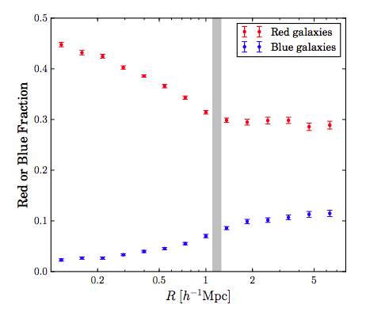
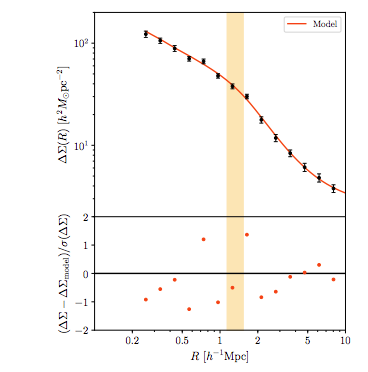
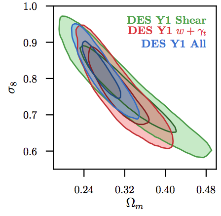

| Searching for Planet X with CMB and optical surveys: here |

|
| Detecting exo-Oort clouds with CMB data: here and here | |
| Measurement of splasback around SDSS galaxy clusters: here |  |
|  | Measurement of splashback around galaxy clusters using gravitational lensing: here |
| First year DES cosmology results: here and here |  |